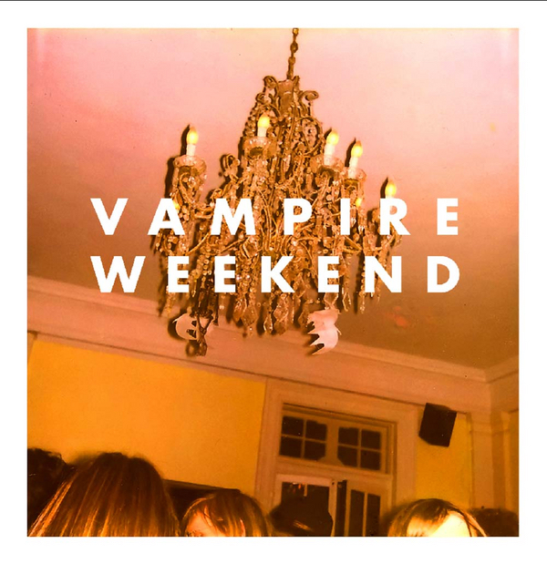

Day 46

Vampire Weekend ◆ A Punk ◆ Vampire Weekend ◆ 2007
我在 Reddit 上看 ChildrenFallingOver 的时候看到个集锦视频，里面的背景音乐是这首www 他们另一张专辑 Contra 的封面挺好看，想听听看。Vampire Weekend 的歌词怎么说呢，很加州……
Johanna drove slowly into the city
The Hudson River all filled with snow
She spied the ring on His Honor's finger
Oh-oh-oh
A thousand years in one piece of silver
She took it from his lily-white hand
Showed no fear she'd seen the thing
In the Young Men's Wing at Sloan-Kettering
Look outside at the raincoats coming, say oh
Look outside at the raincoats coming, say oh
His Honor drove southward seeking exotica
Down to the Pueblo huts of New Mexico
Cut his teeth on turquoise harmonicas
Oh-oh-oh
I saw Johanna down in the subway
She took an apartment in Washington Heights
Half of the ring lies here with me
But the other half's at the bottom of the sea
Look outside at the raincoats coming, say oh
Look outside at the raincoats coming, say oh
Look outside at the raincoats coming, say oh
Look outside at the raincoats coming, say oh